扉页
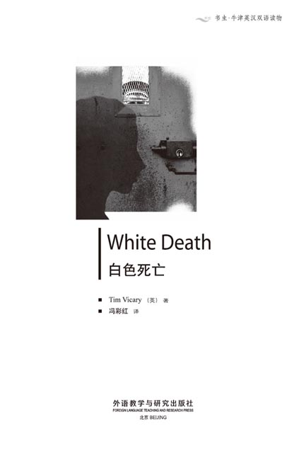
版权页
京权图字：01-2002-6582
Originally published by Oxford University Press, Great Clarendon Street, Oxford. © 2000
This edition is licensed for sale in the People's Republic of China only and not for export therefrom.
'Oxford' is a registered trademark of Oxford University Press.
只限中华人民共和国境内销售，不包括香港特别行政区、澳门特别行政区及台湾省。不得出口。
图书在版编目（CIP）数据
白色死亡＝White Death／（英）维卡里（Vicary, T.）著；冯彩红译．—北京：外语教学与研究出版社，2003.5（2014.12重印）
（书虫·牛津英汉双语读物）
ISBN 978-7-5600-3614-4
Ⅰ．白… Ⅱ．①维… ②冯… Ⅲ．小说—对照读物—英、汉 Ⅳ．H319.4：I
中国版本图书馆CIP数据核字（2003）第065549号
出版人：蔡剑峰
责任编辑：易 璐
出版发行：外语教学与研究出版社
社 址：北京市西三环北路19号（100089）
网 址：http://www.fltrp.com
版 次：2003年9月第1版
书 号：ISBN 978-7-5600-3614-4
* * *
凡侵权、盗版书籍线索，请联系我社法律事务部
举报电话：（010）88817519 电子邮箱：banquan@fltrp.com
法律顾问：立方律师事务所 刘旭东律师
中咨律师事务所 殷 斌律师
内容简介
内容简介
海洛因能杀人。但是，在杀人之前，海洛因首先会改变一个人。它将你的朋友变成敌人；将你的爱人变成陌生人。海洛因杀死人的躯体——但它首先摧毁人的心灵。
安娜·哈兰认为她了解自己的女儿萨拉。她知道萨拉不会贩卖海洛因。但是，爱情也能改变一个人。萨拉正在恋爱——和一个陌生人恋爱。她的包里为什么会有海洛因？是给她的男朋友带的吗？
有人要死了——但会是谁？是吸食海洛因的人？还是贩卖海洛因的人？抑或是一个从未碰过海洛因的年轻女孩？海洛因就是白色死亡。如果它能够的话，它将把这些人都杀死。
WHITE DEATH
WHITE DEATH
Heroin kills. But before it kills, heroin changes people. It changes your friend into your enemy; it changes someone you love into a stranger. Heroin kills the body—but first it kills the heart.
Anna Harland thinks that she knows her daughter, Sarah. She knows that Sarah does not sell heroin. But love can change people, too. And Sarah is in love—with a stranger. Why did she have heroin in her bag? Was she carrying it for her boyfriend?
Someone is going to die—but who? The person who uses the heroin? The person who sells it? Or a young girl who never touches it? Heroin is the White Death. And, if it can, the White Death is going to kill them all.
目录
chapter-a042_ 1
Chapter 1
The woman stood in front of the prison. The prison was a big, dirty building in the biggest town of a hot country. The woman was very hot, and she did not like the noise from all the cars in the road. She was an Englishwoman and she did not like hot countries or a lot of noise. She was tall, about fifty years old, with blue eyes and a long face. Her face was red, and she looked tired and angry.
She knocked at the door of the prison. For a long time nothing happend. Then a little window opened in the door, and a man looked out at her.
'Yes? What do you want?'
'I want to see my daughter. It's very important.'
'Name?'
'Anna Harland.'
'Is that your name or your daughter's name?'
'It's my name. My daughter's name is Sarah Harland.'
'You can't visit her today. Come back on Wednesday.'
'No! I came from England to see her today. It's very important. She's going to court tomorrow. Please take me to her—now!'
'Wait a minute.'
The little window closed, but the door did not open. The woman waited in front of the door for a long time. A lot of people in the road looked at her. One or two young men laughed, but she did not move. She stood there in the hot road in front of the prison door, and waited.
After twenty minutes, the door opened. 'Come with me,' the man said. The woman went in with him. It was dark in the prison, and at first she could not see very well. She walked for a long time, past hundreds of doors. Then the man opened one of them.
'In here,' he said. 'You can have ten minutes.'
Anna Harland walked into the room and the man went in after her. He closed the door behind him. There was a table in the room, and two chairs. On one of the chairs sat her daughter, Sarah. She was a tall girl, about nineteen years old, with big blue eyes.
'Mother!' she said. 'I'm very happy to see you.' And she got up and began to run across the room to her mother.
'Sarah!' Anna said, and put out her arms. But the man moved quickly and stood between them.
'No,' he said to Anna. 'I'm sorry. I know you're her mother. You can talk, but that's all. Please sit down at the table. I am here to watch you.'
The mother and daughter sat down at the table. Anna's hands were near Sarah's on the table. She looked carefully at her daughter. Sarah's dress and face were dirty. 'She's tired, and unhappy,' Anna thought.
'Sarah, what happened?' she said. 'We have ten minutes to talk. No more. Tell me, please, quickly. I want to help you.'
Sarah looked at her mother. 'Oh, mother, I'm happy you're here. I wanted you to come. Mother, I ... I didn't do it. It isn't true. Please believe me.'
'Of course I believe you, Sarah. But tell me about it. What happened? Quickly. Begin at the beginning.'
'Yes, but ... I don't know ... When did it begin? I don't know ... I don't understand it.'
'Why did the police arrest you? When did they bring you to this prison?'
'Last week, I think. Yes, last week. At the airport, when we arrived ... The police stopped us, and looked in our bags. Then ...'
Sarah looked down at the table. 'She's crying,' Anna thought. 'She's very unhappy.'
'What happened then, Sarah?' her mother asked.
'They ... they said there were drugs in my bag. Then they took me into a room and told me to take my dress off. They looked for more drugs, but they found nothing. Then ... then they brought me here.'
'I see. Where were the drugs, then? Where did they find them?'
'Oh. They didn't tell you?' Sarah stopped crying. She looked up, and there was a smile on her face. But it was not a happy smile. 'The drugs were in a tube of toothpaste. A toothpaste tube with drugs in it ... heroin ... not toothpaste.'
'And you didn't know about it?'
'No, mother, of course not. Do you think I clean my teeth with heroin?'
Anna Harland smiled. It was difficult to smile, because she was afraid. But she smiled because she wanted to help her daughter.
'I know you don't clean your teeth with heroin. You have very good teeth, Sarah. But ... what about Stephen? Did he know about the heroin? Did he put it in the toothpaste tube?'
'Stephen? No ... why do you ask about Stephen, mother?'
'Well, is he in prison too? You said "us" and "our bags". Did the police arrest him too?'
'Oh ... no,' Sarah's face was unhappy. 'No. I wasn't with Stephen, mother. You see, Stephen and I ... well, we aren't friends now. I left him about two months ago ... and then I met Hassan.'
'Hassan?'
'Yes. I was with Hassan at the airport. Stephen was on the plane too—I don't know why—but he wasn't with me. It's Hassan—he was with me. Hassan's important to me now, not Stephen.'
Anna looked at her daughter. 'I see. And did the police arrest this Hassan too? Is he in prison?'
'Yes, he is. They arrested him but I can't see him. I asked them. I wanted to see him. But they said "no". Mother, I'm sure Hassan didn't know about the heroin. He's a good man ... he didn't know, I'm sure.'
'Then why was the heroin in your bag, Sarah?'
'I don't know, mother ... I don't know.'
The man looked at the clock in the room. 'I'm sorry, Mrs Harland,' he said. 'But that's ten minutes. It's time to go.'
Anna Harland stood up slowly. 'All right,' she said. 'But don't be afraid, Sarah. I'm coming to the court tomorrow.'
'Yes, mother,' Sarah said. 'Thank you. The police are bringing Hassan to court tomorrow too, I think. You can see him there. He's a good man, mother, and ... I'm sure he didn't know about the drugs.'
'Perhaps,' Anna said. She walked slowly to the door, and then stood by the door and looked at her daughter again. 'Sarah ... you are telling me the truth, aren't you?'
Sarah began to cry again. 'Yes, mother, of course I am. I always tell you the truth, you know that.'
Anna smiled. 'Yes, Sarah,' she said quietly. 'Yes, I believe you.' She went through the door and the man went out after her.
Sarah sat quietly at the table in the room, and looked at her hands. 'Yes,' she thought. 'I told you the truth, mother. I always tell you the truth. But I didn't tell you everything ...' She put her head in her hands.
in front of in a position further forward. 在……前面。
building n. structure with walls and a roof. 建筑物。
knock v. strike with a sharp blow. 敲击，敲打。
nothing pron. not anything, no single thing. 没什么，无物。
happen v. occur, take place. 出现，发生。
important adj. very serious and significant. 重要的，重大的。
court n. places where trials are held. 法庭，法院。
hundreds of 成百上千的。
across prep. from one side to the other side. 从一边到另一边，横过。
believe v. feel sure of the truth of (sth.). 相信。
arrest v. seize with the authority of the law. 逮捕，扣留。
cry v. weep. 哭，流泪。
unhappy adj. sad, not happy. 难过的，不愉快的。
take off remove (an item of clothing) from one's body. 脱下衣物。
look for search for or try to find. 寻找。
toothpaste n. paste for cleaning the teeth. 牙膏。
heroin n. narcotic drug. 海洛因。
difficult adj. not easy. 困难的。
truth n. that which is true. 事实，真相。
第一章
第一章
监狱前面站着一个女人。这个监狱是个又大又破的建筑物，坐落在一个气候炎热的国家最大的城镇里。女人感到很热，她还很讨厌路上飞驰而过的汽车的噪音。她是个英国人，既不喜欢气候炎热的国家，也不喜欢嘈杂。她高高的个子，大约有50岁，蓝眼睛，长脸。她的脸红红的，看起来很疲惫，而且满面怒色。
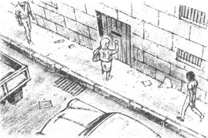
她敲打着监狱的门。很长一段时间过去了，但一点动静也没有。接着，门上开了一扇小窗，一个男人向外看着她。
“嗨，你有什么事儿吗？”
“我要见我女儿，这很重要。”
“叫什么名字？”
“安娜·哈兰。”
“这是你的名字，还是你女儿的名字？”
“我的名字。我女儿的名字叫萨拉·哈兰。”
“今天你不能见她，星期三再来吧。”
“不！我从英格兰赶来，就是要在今天见她。这很重要。她明天就上法庭了。请您带我去见她吧——就现在！”
“请稍候。”
那扇小窗关上了，门却没有开。女人又在门前等了很长时间。路上的很多人都在看她。有一两个年轻人还冲着她笑，但是她没有离开。她站在监狱门前热得发烫的路上，等着。
20分钟后，门开了。“跟我来，”那人说。女人就跟着他进去了。监狱里很暗，开始时，她看不大清楚。她走了很长时间，经过了成百上千扇门。然后，那人打开了其中的一扇门。
“在里面，”他说，“你有10分钟的时间。”
安娜·哈兰走进了那个房间，那人也跟着她进来了。他随手关上了门。房间里有一张桌子和两把椅子。其中一把椅子上坐着她的女儿，萨拉。她是一个高个子女孩，大约19岁，蓝色的眼睛大大的。
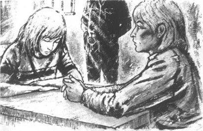
“妈妈！”她喊道，“能见到你我太高兴了！”她站起来，要穿过房间，奔向她的妈妈。
“萨拉！”安娜说着，伸出了双臂。但是那人很快冲了过来，站在她们的中间。
“不行，”他对安娜说，“很抱歉，我知道你是她的母亲。你们可以交谈，但仅此而已。请坐在桌子旁边。我在这儿看着你们。”
母女在桌前相视而坐。安娜的手放在桌子上，离萨拉的手很近。她仔细地打量着女儿。萨拉的衣服和脸都很脏。“她很累，而且不开心。”安娜想。
“萨拉，出了什么事？”她问，“我们可以谈10分钟，只有10分钟。来，快点告诉我。我想帮助你。”
萨拉看着她的母亲。“噢，妈妈，我很高兴你能来这儿。我一直盼着你来。妈妈，我……我没有那样做。那不是真的。请你相信我。”
“我当然相信你，萨拉。但是告诉我是怎么回事儿，到底发生了什么？快点，从头开始讲。”
“好吧，但是……我不知道……这是什么时候开始的呢？我不知道……我也不明白。”
“警察为什么要逮捕你？他们是什么时候把你带到这个监狱来的？”
“我想是上个星期。是的，是上个星期。在机场，我们刚到的时候……警察拦住了我们，检查我们的包。然后……”
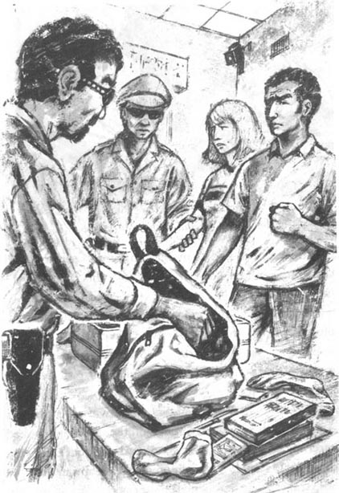
萨拉低头看着桌子。“她在哭，”安娜想，“她很伤心。”
“后来呢，萨拉？”她妈妈问道。
“他们……他们说我的包里有毒品。他们把我带到一个房间里，让我脱下衣服。他们想找到更多的毒品，却什么也没发现。然后……然后他们就把我带到这儿来了。”
“我知道了。那么，毒品在哪儿呢？他们在哪儿发现的？”
“喔，他们没告诉你？”萨拉不再哭了。她抬起头，脸上还带着微笑，但那不是开心的笑，“毒品在牙膏管里。牙膏管里面装的是毒品……海洛因……而不是牙膏。”
“那你以前不知道这些吗？”
“当然不知道啦，妈妈。你以为我会用海洛因刷牙吗？”
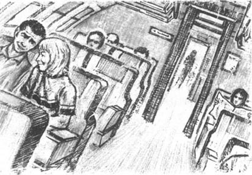
安娜·哈兰笑了。笑得很艰难，因为她很害怕。但她还是笑了，因为她想帮助自己的女儿。
“我知道你不会用海洛因刷牙。你的牙齿很好，萨拉。但是……斯蒂芬呢？他知道海洛因的事吗？是他把海洛因装到牙膏管里的吗？”
“斯蒂芬？不……你为什么要问起斯蒂芬，妈妈？”
“喔，他也在监狱里吗？你刚才说‘我们’还有‘我们的包’。警察也把他抓起来了吗？”
“噢……不是的，”萨拉看起来不太高兴，“不，我没有和斯蒂芬在一起，妈妈。你知道，我和斯蒂芬……是这样的，我们现在不是朋友了。大约两个月前，我和他分手了……然后我遇到了哈桑。”
“哈桑？”
“是的。在机场的时候，我和哈桑在一起。斯蒂芬也在飞机上——我不知道为什么——但是他没和我在一起。是哈桑——他和我在一起。现在哈桑对我很重要，而不是斯蒂芬。”
安娜看着自己的女儿。“我明白了。警察也逮捕这个哈桑了吗？他在监狱里吗？”
“是的，他也在监狱里。他们也逮捕了他，但是我不能见他。我问过他们。我想见他，但是他们不准。妈妈，我敢保证哈桑不知道包里有海洛因。他是个好人……他不知道，我保证。”
“那海洛因怎么会在你的包里，萨拉？”
“我不知道，妈妈……我不知道。”
那人看了看房间里的时钟。“对不起，哈兰太太，”他说，“已经10分钟了。您得出去了。”
安娜·哈兰慢慢地站了起来。“好吧，”她说，“但是，别害怕，萨拉。我明天会去法庭旁听的。”
“好的，妈妈，”萨拉说，“谢谢你。我想，明天警察也会把哈桑带上法庭的。在那儿，你就能看到他了。他人不错，妈妈，并且……我保证他不知道毒品的事。”
“也许吧，”安娜说。她慢慢地向门口走去，然后站在门边，回头看着她的女儿，“萨拉，你跟我说的都是实话……是吗？”
萨拉又开始哭了。“是的，妈妈。我告诉你的当然是实话。你知道的，我从不撒谎。”
安娜笑了。“是的，萨拉，”她平静地说，“我相信你。”她穿过门走了出去，那个男人也跟在她后面出去了。
在房间里，萨拉静静地坐在桌前，看着自己的手。“是的，”她想，“我说的是实话，妈妈。我从不对你撒谎。但是我并没有把所有的都告诉你……”她把头埋在手里。
chapter-a042_ 2
Chapter 2
Anna Harland left the prison and went to talk to the police. She waited a long time in a small office, but after an hour a policeman came into the room. He was a big man, about fifty-five years old, with brown eyes and a nice smile. He moved very slowly and quietly.
'Good afternoon, Mrs Harland,' he said. 'My name is Detective Inspector Aziz. I ... arrested your daughter three days ago. I'm very sorry for you. This is a very unhappy thing for a mother ...'
'It's a very unhappy thing for my daughter, Inspector,' Anna said angrily. 'Because she didn't do it. She's innocent, you know. She knows nothing about those drugs.'
Detective Inspector Aziz looked at her carefully for a minute. He did not know many English women. 'She has an interesting face,' he thought. 'Very blue eyes, and a long nose. She is not afraid of me, and she is not crying. Perhaps she wants to know the truth. Perhaps she can help me, too.'
'Well, Mrs Harland,' he said slowly. 'It's difficult for me. Is your daughter telling the truth? Is she innocent? Because the drugs were in her bag, you know.'
'I know,' Anna said. 'But she was with a young man ... Hassan. She doesn't know him very well, I think. Tell me about him, please, I want to know.'
Inspector Aziz smiled. 'All right,' he said. 'But first, tell me about your daughter. Why was she on that plane? Why did she come to this country? Tell me.'
Anna Harland looked at him. 'He's a nice man,' she thought. 'He listens to people. Perhaps he wants to help. Perhaps he can understand Sarah.'
'Do you have daughters?' she asked.
'Yes,' the Inspector answered. 'Two.'
'Then perhaps you can understand,' Anna said. 'Sarah is nineteen. She finished school last year, and she worked for six months in a hospital to get some money. Then she and her boyfriend, Stephen, visited a lot of countries. They went to Greece, Turkey, India, Australia—and now they're here. They're young, and they want to see new countries and new towns and new people. That's all.'
'I see,' the Inspector said. 'But sometimes young people do things—bad things—because they are in a different country and they need money.'
'Not Sarah,' Anna said. 'And not heroin. Sarah worked in a hospital, and she knows about heroin. She knows it can kill people. I'm a doctor, and she wants to be a doctor, too.'
'I see,' the Inspector said again. He looked at her, and thought, but he said nothing.
'Now,' Anna said. 'Tell me about this young man, Hassan.'
'All right,' the Inspector said. He took some papers from the table and began to read to her. 'But we don't know very much about him. He's a rich boy, from a good family. His father has two or three shops, I think. And the police in his town know him, too. Last year his father gave him a new car—a very fast car. And ... listen to this! One day he hit a police car, and the police car went into the river! What a story! His father bought a new car for the police. His father has a lot of money.'
The Inspector smiled, but Anna looked unhappy. 'Oh dear,' she said. 'That's not very good.'
'No,' he said. 'It isn't good. But this story about the heroin is worse. Much worse. I don't like this story.'
detective n. a police officer. 侦探。
innocent adj. not guilty. 无辜的，清白的。
interesting adj. holding the attention. 有趣的。
understand v. know how to deal with. 理解，了解。
finish v. come or bring to an end. 结束，完成。
different adj. not the same. 不同的，不一样的。
worse adj. of a less excellent or desirable kind. 更坏的，更糟糕的。
第二章
第二章
安娜·哈兰离开了监狱，接着又去找警察谈话。她在一个小办公室里等了很长一段时间。一个小时以后，一个警察走了进来。他个头不小，大约55岁上下，棕色的眼睛，脸上带着和蔼的笑容。他走得很慢而且脚步很轻。
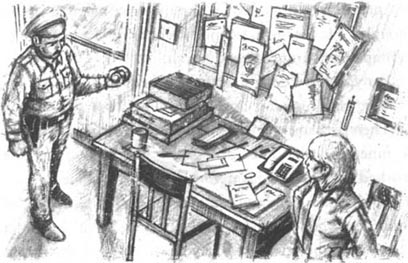
“下午好，哈兰太太，”他说，“我是阿齐兹探长。三天前，我……逮捕了您的女儿。我很抱歉。对于一个母亲来说，这确实是一件令人难过的事情……”
“对我女儿来说也是如此，探长，”安娜愤怒地说，“因为那不是她干的。她是无辜的，她根本不知道那些毒品是怎么回事。”
阿齐兹探长盯着她认真地看了一会儿。他认识的英国女人不多。“她的脸很有意思，”他想，“蓝蓝的眼睛，长长的鼻子。她不怕我，也没有哭，也许她想知道事实的真相。她或许还能帮助我。”
“哦，哈兰太太。”他慢慢地说，“这对我来说也很难办。您的女儿说的是实话吗？她是无辜的吗？您知道，那些毒品可是在她的包里。”
“我知道，”安娜说，“但是她是和一个小伙子在一起……哈桑。我觉得她并不是很了解他。请告诉我关于他的情况，我想知道。”
阿齐兹探长笑了。“好的，”他说，“但是，首先告诉我你女儿的情况。她为什么会在那架飞机上？她为什么要来这个国家？告诉我。”
安娜·哈兰看着他。“他这个人不错，”她想，“他倾听别人说话。也许他想帮忙，也许他能理解萨拉。”
“你有女儿吗？”她问。
“有，”探长回答说，“有两个。”
“那样的话，也许你会理解，”安娜说，“萨拉19岁了。她去年从学校毕业，为了挣点钱，她在一家医院里工作了六个月。然后她就和她的男朋友斯蒂芬去了很多国家。他们去过希腊、土耳其、印度、澳大利亚——现在来到这儿。他们很年轻，想见识不同的国家和城镇，结识不同的人。就这样。”
“我明白，”探长说，“但是有时年轻人会做一些事情——坏事——因为他们身处异国他乡，需要钱。”
“萨拉不是这样的，”安娜说，“她也不会去贩卖海洛因。萨拉以前在一家医院工作，她知道海洛因的危害。她知道那会使人丧命。我是一个医生，而她也想成为一名医生。”
“我明白。”探长说。他看着她，思考着什么，却什么也没说。
“现在，”安娜说，“告诉我这个年轻人哈桑的情况。”
“好的，”探长说。他从桌子上拿起几份文件，开始读给她听，“但是我们对他也不甚了解。他家境不错，很有钱。我想他父亲开了两三家商店。镇里的警察也知道他。去年，他爸爸给了他一辆新车——跑得很快的那种车。还有……听这个！有一天，他撞了警察的车，并且将它撞到了河里。多糟糕啊！于是他父亲又给警察买了一辆新车。他爸爸很有钱。”
探长笑了，但是安娜却笑不出来。“噢，天哪，”她说，“这可不大好。”
“是的，”他说，“这不好，但这次海洛因的事就更糟糕了。非常糟糕。我不喜欢这个故事。”
chapter-a042_ 3
Chapter 3
Next morning, Anna Harland went to the court. She was first there. She sat in the courtroom and waited. A lot of people came in, and she saw a man and his wife. 'Perhaps they're Hassan's father and mother,' Anna thought. But she did not want to talk to them.
The lawyers came in next, with a lot of papers. They sat at a table in front of her, and talked quietly.
'Those two lawyers,' Anna thought, 'they're old friends. But one of them wants my daughter to die, and one wants her to be free.'
After the lawyers, the jury came in—twelve people, men and women. They sat down and watched the lawyers. They looked at Anna, and then talked quietly about her. 'These people don't look very important,' she thought. 'But they are the most important people here. They're going to say "she did it"... or "she didn't do it". And then Sarah comes home to me ... or she dies.' She watched their faces carefully.
Then some policemen came in. Inspector Aziz saw Anna and smiled at her. But Anna did not talk to him, because Sarah came in at the same time. She looked afraid, and her face was very white. She looked across the courtroom, saw her mother, and gave her an unhappy smile.
There were two policemen behind Sarah, but Anna did not look at them. She looked at the tall dark young man next to Sarah—Hassan!
'He's about twenty years old,' Anna thought. 'He's very tall. But he has a nice face, and very beautiful dark eyes. Sarah likes him, and I can understand that. But he looks very unhappy, too ... and afraid. His hands are moving all the time.'
Hassan looked at Sarah and smiled. She smiled back at him. Anna wanted to talk to Sarah, but just then a policeman said loudly: 'All stand, please.' Everybody stood up, and the judge came into the courtroom. He went to his chair and sat down.
The police lawyer began. 'These two young people came into our country last week,' he said. 'The young man lives in this country, and the young woman is English. At the airport, the police looked in their bags, and they found three tubes of toothpaste. These tubes of toothpaste!'
He had the three tubes in his hand, and he looked at them. Everybody could see them.
'But are they tubes of toothpaste?' he asked. 'No, men and women of the jury, they are not. Oh no. There is no toothpaste in these tubes. There is heroin in them! Yes, heroin ... a bad, dirty drug. Perhaps the worst drug. People die from this drug. The "White Death", they call it.'
The lawyer stopped, and looked at the jury. He waited for a minute or two. The courtroom was very quiet. Then he began again.
'But why, you ask me—why did these two young people have this heroin in their bags? I can tell you. Because heroin is one of the most expensive drugs, too. They can sell these tubes of heroin in our country for perhaps eighty thousand pounds. Eighty thousand pounds! Easy money! And, men and women of the jury, many people in our country—young people, schoolchildren, too—take this drug. At first it's exciting and they feel happy. But then they need more and more heroin, and they need more money to buy the drug. They leave their homes and families. They take more heroin ... and more. They can't stop. Soon the drug begins to kill them. And in the end they die. The "White Death". It's not a quick death, and it's not an easy death. Yes, men and women of the jury, many young people and children—your children and my children, remember!—die because of this drug.'
The lawyer stopped again. The jury watched him, and waited.
'He's very good,' Anna thought. 'Very, very good. He's telling the jury an exciting story, and they like him. But it isn't good for Sarah.'
The lawyer walked across the courtroom and stood in front of the jury. 'But, my friends,' he said to the jury, 'we have a law in this country. And the law is not difficult to understand. When people bring heroin into this country, they bring death, too. We need to stop these people. And how can we do that? The answer is easy. The law for these people is death.'
The lawyer walked back to his table. 'Now please look at these two young people here in this court,' he said to the jury. 'They brought heroin into this country. The airport police are going to tell you about it. Please listen carefully. It's not a long story. And remember ... the law is death.'
The police lawyer sat down, and an airport policeman went to the front of the courtroom. Anna felt ill. She looked at Sarah. Sarah was white-faced and very afraid. Anna closed her eyes. 'Sarah,' she thought, 'Oh, Sarah.'
The police lawyer stood up again. 'Please tell the court about Sarah Harland and Hassan,' he said to the airport policeman.
'Yes, sir,' said the policeman. 'I found two tubes of toothpaste in the girl's bag, and one tube in the young man's bag. All three tubes had heroin in them.'
'Thank you.' The police lawyer sat down, and Mr Cheng—Sarah's and Hassan's lawyer—stood up.
'What did Sarah Harland say when you found the heroin?' he asked.
'Nothing, sir. She began to cry.'
'I see. Was she afraid?'
The policeman thought for a minute. 'I don't know, sir. Perhaps she was, yes.'
'And she said nothing? Are you sure?'
The policeman thought again. 'Well, yes, sir, I think perhaps she said: "This isn't my toothpaste. This is all wrong."'
'I see. And what about the young man, Hassan? What did he say?'
'Well, sir, he was very angry. He said: "It's not heroin. That's not true! You put it there!"'
'I see. Thank you. Now tell me, why did you look in these two young people's bags? You don't usually look in everyone's bags. There isn't time.'
The policeman thought again. 'Well, no, sir, we don't. I ... I'm afraid I can't tell you, sir.'
'What did you say?' Mr Cheng asked, very angrily. 'Of course you can tell me! This is a court of law!' He looked at the judge. 'This is a very important question. We need an answer!'
The judge looked at the airport policeman. 'I'm sorry,' he said. 'Please answer the question. The court needs to know the answer.'
'Yes, sir. Well, you see, there was a telephone call. Someone telephoned me before the plane arrived. The telephone caller said: "There's some heroin on the plane. A young man and a young woman are carrying it."'
'I see,' Mr Cheng said. He smiled. 'That's very interesting. And who made this telephone call?'
'I don't know,' the policeman said. 'It was a man, and he talked in English. I don't know his name.'
* * *
Suddenly Anna heard a noise. She looked behind her at the door of the courtroom. A tall young man came into the back of the room. Anna knew him at once. It was Stephen, Sarah's old boyfriend. A policeman took him to a chair near Anna. He saw Anna, and for a second he looked afraid. But then he smiled, and sat down next to her.
'Mrs Harland!' he said quietly. 'It's good to see you. When did you arrive?'
'Yesterday,' she said. 'Why are you late?'
'I couldn't find the court,' he answered. He looked very unhappy. 'Tell me how to help,' he said. 'I want to help Sarah, but what can I do? I was on the plane too, but I couldn't help her. I don't want her to die!'
'Stay with me, young man,' Anna said quietly. 'We can help her—I'm sure we can!'
* * *
Later that morning, Sarah went to the front of the courtroom. Her face was very white, and her eyes were red with crying. Her lawyer—Mr Cheng—began to ask her questions.
'Now, Miss Harland, why did you come to this country?' he asked quietly, and smiled at her.
'Because I like going to different countries. I want to meet new people.'
'And why were you with this young man?'
'Because ...' Sarah stopped and looked down at her feet. Nobody could see her face. She began again, very quietly, but nobody could hear her.
'I'm sorry. We can't hear you. Can you say that again, please?'
Sarah looked up. She looked quickly at her mother, and then at Hassan.
'Because I love him.'
Anna felt old and tired. She looked at the tall young man with the beautiful dark eyes. 'It was his heroin,' she thought. 'I'm sure it was. He buys and sells heroin, and he put it in my daughter's bag. And now she says she loves him!'
Stephen sat next to her. He did not move, and he watched Sarah all the time. But she did not look at him.
Mr Cheng waited a minute, and then he questioned Sarah again. 'Did you know about the heroin in those tubes of toothpaste?' he asked.
'No,' Sarah said quickly. 'Of course I didn't!'
'And what about Hassan? Did he know about the heroin? Please think about your answer.'
'No, I'm sure he didn't know. It wasn't our heroin!' Sarah's blue eyes were angry. 'We didn't put the heroin in the toothpaste tubes. We're innocent!'
'Thank you, Miss Harland,' Mr Cheng said quietly, and sat down.
The police lawyer stood up. 'Miss Harland. How much money did you have in your bag?'
'Um ... about fifty pounds, I think.'
'That's not very much. This is an expensive country, you know. How much can you buy ... with your fifty pounds?'
Sarah did not have an answer. 'Um ... I don't know,' she began. 'I usually live very cheaply ...'
'Did you need more money?' The lawyer's questions came quickly now. 'Of course you needed more money. You wanted to sell that heroin. You wanted to be rich. Is that right?'
'No! No! That's not true!'
The lawyer said nothing for a minute. He looked at the jury, and smiled. Then he said, 'Do you think toothpaste is very expensive in this country, Miss Harland?'
'Er ... no, I don't think ... er ... I don't know.'
'Well, I can tell you, it isn't. Toothpaste is cheap here. So why did you bring three tubes of toothpaste with you? How often do you clean your teeth, Miss Harland? Six times a day? Or seven, or eight, times a day, perhaps?'
Sarah looked very unhappy. 'No ... I don't know ... Hassan ...'
'Yes?' the lawyer said quickly. 'Hassan? Are you going to say "Hassan gave it to me"? You love this young man, but you don't want to die. Nobody wants to die. And now you're going to say "It was Hassan's toothpaste". Is that your answer, Miss Harland?'
'No!' Sarah said angrily. 'Of course not! It was my toothpaste. But ...'
'Thank you, Miss Harland.' The police lawyer sat down. 'I have no more questions.'
lawyer n. person who is trained and qualified in legal matters. 律师。
jury n. group of people chosen to listen to the case to decide whether someone is guilty. 陪审团。
beautiful adj. having beauty. 美丽的。
look in investigate or examine sth. 调查或观察。
expensive adj. costing a lot. 昂贵的。
exciting adj. causing great interest. 令人兴奋的。
in the end at last, finally. 终于，最后。
what about ...... 怎么样。
arrive v. reach. 到达。
suddenly adv. quickly and unexpectedly. 突然。
question v. ask questions. 问问题。
cheap adj. low in price. 便宜的。
第三章
第三章
第二天早上，安娜·哈兰去了法院。她是第一个到的。她坐在法庭里，等待着。来了很多人，她看到一对夫妇。“他们可能是哈桑的父母。”安娜想。但是她不想和他们说话。
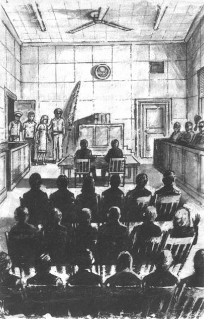
接着，律师也进来了，手里拿着很多文件。他们在她前面的一张桌子前坐下，小声地交谈着。
“这两个律师，”安娜想，“他们是老朋友了。但是其中一个想让我女儿死，另一个却要让她获得自由。”
跟在律师后面进来的是陪审团——一共12个人，有男的，也有女的。他们坐了下来，望着律师。而后他们又看着安娜，小声地议论她。“这些人看起来不是很重要，”安娜想，“但是他们其实是这儿最重要的人。他们要说‘她做了……’或者‘她没做’。然后萨拉要么跟我回家，要么被判死刑。”她认真地端详着他们的脸。
紧接着，一些警察进来了。阿齐兹探长看到了安娜，冲她笑了笑。但是安娜没有和他说话，因为就在此时，萨拉也进来了。她看起来很害怕，脸色苍白。她的眼睛扫过法庭，看到她妈妈时，冲着她苦笑了一下。
萨拉后面跟着两个警察，但是安娜并没有看他们。她注视着萨拉旁边的那个又黑又高的年轻人——哈桑！
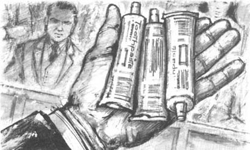
“他大概有20岁，”安娜想，“他个子很高，面容英俊，黑色的眼睛也很漂亮。萨拉喜欢她，这我能理解。但是他看起来也很难过，还……有点恐惧。他的手一直在颤抖。”
哈桑看着萨拉，笑了。她也冲着他笑。安娜想和萨拉说话，但就在这时，一个警察大声说：“请全体起立。”所有人都站了起来，法官走进了法庭。他向他的椅子走去，而后坐下。
警方律师先发言。“上个星期，这两个年轻人来到我们国家。”他说，“这个小伙子是本国人，那个女孩是英国人。在机场，警察搜查了他们的包，发现了三管牙膏。就是这些牙膏！”
他看着自己手里举着的三管牙膏，法庭上的每个人也都看到了。
“但它们真是三管牙膏吗？”他问，“不，陪审团的女士们，先生们，它们不是。噢，不是。这里面装的不是牙膏，而是海洛因！是的，海洛因……一种邪恶的、肮脏的毒品，也许是危害最大的毒品。人们因它而丧命。人们称之为‘白色死亡’。”
律师停下来，看着陪审团。他稍微停顿了一会儿。法庭里安静极了。接着，他又开始说了。
“但是为什么，你们问我——为什么这两个年轻人的包里有毒品？我可以告诉你们。因为海洛因也是最贵的毒品之一。在我国，他们卖掉这几管海洛因可以得到大约八万英镑。八万英镑！这钱来得也太容易了！陪审团的女士们，先生们，在我们国家，有很多人——包括一些年轻人，还有在校的学生——吸食这种毒品。开始时，这会令人很兴奋，他们会感到很快乐。但是紧接着，他们就需要越来越多的海洛因，也就需要越来越多的钱来买它。于是，他们离开自己的家庭和亲人。他们吸食更多的海洛因……越来越多。他们无法停止。很快，海洛因就开始要他们的命了。最后，他们就死掉了。这就是‘白色死亡’。这是一种既不迅速也不容易的死亡方式。是的，陪审团的女士们，先生们，许多年轻人和孩子们——你们的孩子和我的孩子，要记住！——都会因这种毒品而致死。”
律师又停下了。陪审团看着他，等待着。
“他真棒，”安娜想，“非常非常棒。他给陪审团讲了一个激动人心的故事，他们欣赏他，但这对萨拉不利。”
律师穿过法庭，站在陪审团前面。“但是，我的朋友们，”他对陪审团说，“在我国，有这么一项法律条文，它也不难理解。当有人把海洛因带到了这个国家时，他们也同时带来了死亡。我们要阻止这些人。那么我们怎样才能阻止他们呢？答案很简单，法律判他们死刑。”
律师回到他的桌前。“现在，请看看站在法庭上的这两个年轻人，”他对陪审团说，“他们把海洛因带进了这个国家。机场警察将把事情的经过告诉你们。请认真听，这个故事不长。记住，法律规定这是死罪。”
警方律师坐下了，机场警察走到法庭的前面。安娜感到不舒服。她看着萨拉。萨拉的脸色苍白，看得出她很害怕。安娜闭上了眼睛。“萨拉，”她想，“噢，萨拉。”
警方律师又站了起来。“请向法庭陈述一下萨拉·哈兰和哈桑的事。”他对机场警察说。
“好的，长官，”这个警察说，“我在这个女孩的包里发现了两管牙膏，在这个小伙子的包里发现了一管。这三支牙膏管里面装的都是海洛因。”
“谢谢。”警方律师坐下了。程先生——萨拉和哈桑的辩护律师——站了起来。
“当你发现海洛因时，萨拉·哈兰怎么说？”他问。
“什么也没说，她就开始哭了，长官。”
“知道了。她害怕吗？”
警察想了一会儿。“我不知道，长官。也许吧，是的，她很害怕。”
“那么你肯定她什么也没说？”
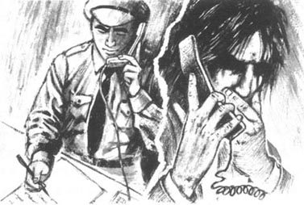
那个警察又想了想。“是这样的，长官。我想她可能说过：‘这不是我的牙膏，全搞错了。’”
“知道了。那个小伙子哈桑呢？他说了什么吗？”
“嗯，长官，他很生气。他说：‘这不是海洛因，这不是真的！是你把它放在这儿的。’”
“我知道了，谢谢你。现在，请告诉我，你为什么要查看这两个年轻人的包呢？你通常不会每个人的包都要查吧？时间不允许的。”
警察又想了想。“嗯，是的，长官。我们不是每个人的包都查。我……这个我恐怕不能告诉您，长官。”
“你说什么？”程先生很生气地问，“你当然可以告诉我！这是法庭！”他看着法官，“这是一个很重要的问题，我们需要一个回答！”
法官看着那个机场警察。“很抱歉，”他说，“请回答这个问题，法庭需要知道答案。”
“好吧，法官大人。是这样的，有一个电话。有人在飞机到达前给我打电话，那人说：‘飞机上有海洛因，由一对青年男女带着。’”
“我明白了，”程先生说，并且笑了，“这很有意思。那么是谁打的电话呢？”
“我不知道，”警察说，“是一个男的，说的是英语。我不知道他的名字。”
* * *
突然，安娜听到有些响动。她回过头看法庭的门口。一个高个子年轻人走了进来，来到房间的后面。安娜一下子就认出他了。他就是斯蒂芬，萨拉的前任男友。一个警察把他领到安娜旁边的一把椅子旁。他看到了安娜，有那么一瞬间，他显出有点恐惧的样子。但是他接着就笑了笑，在安娜旁边坐下来。

“哈兰太太！”他小声说，“很高兴见到您，您什么时候到的？”
“昨天。”她说，“你怎么迟到了？”
“我找不到法庭，”他回答道。他看起来很忧郁，“告诉我怎样帮助她，”他说，“我想帮助萨拉，但我能做些什么呢？当时我也在飞机上，但是我无能为力。我不想让她死！”
“和我在一起，年轻人，”安娜平静地说，“我们能帮助她——我们一定能！”
* * *
那天早上的晚些时候，萨拉来到法庭的前面。她的脸色惨白，眼睛哭得红红的。她的辩护律师——程先生——开始问她问题。
“好，哈兰小姐，你为什么要来这个国家？”他平静地问，笑着看着她。
“因为我想去不同的国家，结识新的朋友。”
“那你为什么和这个年轻人在一起？”
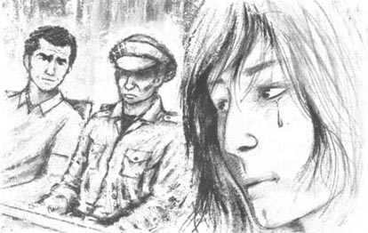
“因为……”萨拉停下了，低头盯着自己的脚。谁都看不到她的脸。她又开始说了，但是声音很小，没有人能听见她说些什么。
“很抱歉，我们听不见。请你再说一遍，好吗？”
萨拉抬起头，匆匆地看了母亲一眼，又看着哈桑。
“因为我爱他。”
安娜感到既苍老又疲惫。她看着那个有着一双美丽的黑眼睛的高个子年轻人。“那是他的海洛因。”她想，“我敢肯定那是他的。他买卖海洛因，却把海洛因放在我女儿的包里。而现在她竟然说她爱他！”
斯蒂芬坐在她的旁边。他一动不动，一直望着萨拉。然而她却不看他。
程先生等了一会儿，接着又开始提问萨拉了。“你知道那些牙膏管里装的是海洛因吗？”他问。
“不知道，”萨拉很快地回答说，“我当然不知道！”
“那么哈桑呢？他知道吗？请认真考虑你的回答。
“不，我肯定他不知道。海洛因不是我们的！”萨拉蓝色的眼睛里满是愤怒，“我们没有把海洛因装在牙膏管里，我们是无辜的！”
“谢谢你，哈兰小姐。”程先生平静地说，接着他就坐下了。
警方律师站了起来。“哈兰小姐，你的包里有多少钱？”
“嗯……我想大约50英镑。”
“不是很多。你知道，这个国家物价很高，用你的50英镑……你能买多少东西？”
萨拉有点回答不上来。“嗯……我不知道。”她开始说，“我平常生活很节省，不花很多钱……”
“那你需要更多的钱吗？”律师的问题很快就来了，“你当然需要更多的钱。你想要卖掉海洛因，你想要变得富有。是不是？”
“不，不！不是的！”
律师沉默了一会儿。他看着陪审团，笑了笑。接着他说：“哈兰小姐，你认为牙膏在这个国家很贵吗？”
“呃……不，我想它不贵……呃……我不知道。”
“好吧，我来告诉你，它不贵。牙膏在这儿很便宜。那么你为什么要随身带着三管牙膏呢？哈兰小姐，你多长时间刷一次牙？一天六次？或许是七次、八次？”
萨拉看起来很难过，“不……我不知道……哈桑……”
“哦？”律师很快截住了她的话，“哈桑？你要说‘是哈桑给我的’？你爱这个年轻人，但是你不想死。没人想死。你现在要说‘那是哈桑的牙膏’。哈兰小姐，这是你的回答吗？”
“不是的！”萨拉愤怒地说，“当然不是！那是我的牙膏。但是……”
“谢谢你，哈兰小姐。”警方律师坐下了，“我问完了。”
chapter-a042_ 4
Chapter 4
At one o'clock the judge left the court for an hour. Anna Harland talked to Sarah for ten minutes. Sarah cried at first.
'I don't like that police lawyer!' she said. 'Those questions were very difficult. I couldn't answer them.'
'It doesn't matter,' her mother said. 'Your lawyer—Mr Cheng—is very good. And Stephen is here too now. We're all going to help you.'
Sarah was angry. 'Don't talk to me about Stephen!' she said. 'I don't like him. I don't want to see him here!'
'But Sarah—he was your boyfriend for two years! He wants to help you.'
Sarah began to cry again. 'Perhaps he does want to help me. I don't know. But he's different now, mother, you don't understand. His eyes are different. They're ... I don't know. And he can't sit quietly and talk to people now. His Body is moving all the time. He came to see me in our hotel the night before we came to this country, and ... I didn't like him, mother! Why is he here? He doesn't love me now, and I don't love him!'
Anna listened carefully to her daughter, and then she went to see Mr Cheng and Inspector Aziz. Stephen went with her.
'Who made that phone call to the police at the airport?' she asked. 'We need to know that!'
'Yes,' Mr Cheng said. 'That's very important. Can the police tell us?'
'Perhaps,' the Inspector said. 'But it's very difficult. It was not a long telephone call. And the man didn't give his name. Perhaps he was a policeman, and he knew about the heroin.'
'Perhaps,' Mr Cheng said. 'But then, perhaps he put the heroin there. And he wanted the police to find it. Perhaps someone doesn't like your daughter, Mrs Harland?'
'I don't know,' Anna said slowly. 'But perhaps ...'
But then the judge came back into the courtroom, and everybody stopped talking.
The judge then called Hassan. Hassan stood up and went to the front of the courtroom. 'He's a rich boy,' Anna thought. 'That shirt and those shoes are very expensive.'
Hassan stood there, tall and very quiet. He waited for the questions. He did not look afraid. But when Mr Cheng looked at his papers and asked the first question, Hassan closed his eyes.
'Did you know about the heroin in those tubes of toothpaste?'
'No, sir.'
'Did Sarah know?'
'No, sir.'
'Who bought the toothpaste?'
Hassan closed his eyes again for two or three seconds. Then he answered, 'I did, sir.'
'You did? You're sure of that?'
'Yes, sir. I'm sure. I clean my teeth a lot, you see.' Hassan smiled for a moment.
'Well, he does have very white teeth,' Anna thought.
'Sarah ...' Hassan began. Then he stopped.
'Yes?'
Again Hassan closed his eyes and waited for a second. Then he looked at the jury, and said very loudly: 'Sarah did not buy the toothpaste. I bought it. I bought all three tubes of toothpaste. It was my toothpaste.'
Anna sat up in her chair and looked carefully at Hassan. 'That's interesting,' she thought. 'Perhaps he does love Sarah!'
'I see,' Mr Cheng said. 'And when did you first meet Sarah Harland?'
'About two months ago. I was in Australia. We were in the same hotel. She had a ... a difficult time with her boyfriend and I helped her.'
Anna looked at Stephen. He was very angry, and he hit the chair in front of him with his hand.
'I see,' Mr Cheng said again. Then he asked his next question. 'Do you usually carry a lot of money? How much money did you have at the airport?'
'About eighty pounds, I think. That's OK. When I need more money, I get some work for a week or two. We don't need much money.'
'And do you sometimes take heroin?'
'No, sir. Never.'
'Thank you. Stay there, please.'
Mr Cheng sat down and the police lawyer stood up. He smiled at Hassan, but it was not a nice smile.
'Now, Hassan. You bought the toothpaste, but it was in Miss Harland's bag. Why? Why did she carry it for you? Or do you always ask your women to carry things for you?' He smiled.
Hassan said nothing. The lawyer began again. 'You had eighty pounds, you say. But eighty thousand pounds is better than eighty pounds, I think. What do you think?'
'Of course it is. But I don't sell heroin. It's wrong to sell heroin.'
The lawyer moved his papers on the table. He looked at the jury. 'So you are a very good young man with very clean teeth but no money. You met a young English girl. She was unhappy with her boyfriend, so you helped her and took her away with you. Is that right? Oh dear! It's not a very good story, you know. I don't believe it, and I don't think the jury believes it, young man.'
He stopped for a minute. Then he looked at Hassan, and said loudly: 'You don't love Sarah Harland, and she doesn't love you. You went with her because she could help you. And she went with you because she wanted the money. She carried the heroin for you to sell. That's right, isn't it? You put the heroin in the toothpaste tubes, and she knew about it. Is that the true story, young man? I think it is.'
'No! I ...' Hassan began angrily. But the lawyer did not listen. He sat down.
'I have no more questions,' he said to the judge.
matter v. to be important. 关系重大，要紧。
close v. move so as to cover. 关闭。
second n. 60th part of a minute. 秒。
Australia n. 澳大利亚。
take v. eat or drink. 吃，饮用。
dear interj. (used in expression of surprise). 天哪。
第四章
第四章
一点钟时，法官离开了法庭一个小时。中间安娜·哈兰和萨拉交谈了10分钟。开始的时候，萨拉哭了。
“我讨厌那个警方律师！”她说，“那些问题很难，我不知道该怎么回答。”
“这没关系，”她妈妈说，“你的律师——程先生——很不错。斯蒂芬现在也在这儿。我们都会帮助你的。”
萨拉很生气。“不要和我谈论斯蒂芬！”她说，“我不喜欢他。我不想在这儿见到他！”
“但是萨拉——他毕竟是你交往了两年的男朋友！他想帮助你。”
萨拉又开始哭了。“或许他真的想帮助我。我不知道。但是他现在和以前不一样了，妈妈，你不明白。他的眼神也不一样。他的眼睛……我不知道。他现在甚至不能安静地坐在那儿和人谈话，他的身体一直动来动去。我们来这个国家的前一天晚上，他到旅馆来看我，还……我不喜欢他，妈妈！他为什么要在这儿？他不爱我了，我也不爱他！”
安娜很认真地听她的女儿说话，然后她去见程先生和阿齐兹探长。斯蒂芬也和她一块儿去了。
“是谁给机场警方打的电话？”她问，“我们需要知道这一点！”
“是的，”程先生说，“这很重要。警方能告诉我们吗？”
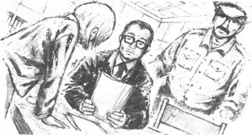
“或许可以，”探长说，“但是这很困难，电话通话的时间不长，那人也没留下名字。也许他是个警察，知道海洛因的事。”
“也许吧，”程先生说，“但是，或许是他把海洛因放在了那儿，而且想让警察发现。也许某个人不喜欢您的女儿，哈兰太太？”
“我不知道，”安娜说得很慢，“但有可能……”
但就在这时，法官回到了法庭，人们停止了交谈。
法官接着叫了哈桑。哈桑站了起来，走到法庭的前面。“他是个富家子弟，”安娜想，“衬衣和鞋子都价格不菲。”
哈桑站在那儿，高高的，显得很平静。他在等待提问。他面无惧色，但是当程先生看着文件，提问他第一个问题时，哈桑闭上了眼睛。
“你知道牙膏管里装的是海洛因吗？”
“不知道，先生。”
“萨拉知道吗？”
“她也不知道，先生。”
“谁买的牙膏？”
哈桑又闭上了眼睛。过了两三秒钟，他答道：“我买的，先生。”
“你买的？你肯定？”
“是的，先生，我肯定。您知道，我老刷牙。”哈桑笑了。
“哦，他的牙齿倒确实是挺白的。”安娜想。
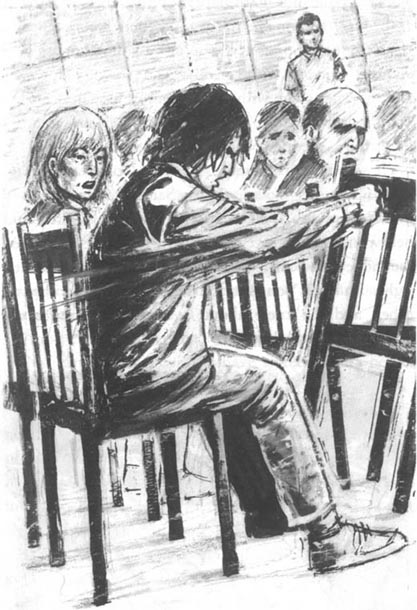
“萨拉……”哈桑说，但是他又停下了。
“哦？”
哈桑又闭上了眼睛，过了一小会儿，他睁开眼睛，看着陪审团，大声地说：“萨拉没有买牙膏，是我买的。三管牙膏都是我买的。那是我的牙膏。”
安娜坐直了身子，仔细端详哈桑。“这倒挺有趣，”她想，“也许他真的爱萨拉！”
“我明白了，”程先生说，“那你第一次见到萨拉是什么时候？”
“大约两个月前。那时我在澳大利亚。我们住在同一个旅馆里。她……和她的男朋友处得不好，我帮助了她。”
安娜看着斯蒂芬。他很生气，用手锤击前面的椅子。
“我明白了，”程先生又说，然后他接着问问题。“你通常在身上带很多钱吗？你在机场时手头有多少钱？”
“我想大约有80英镑。这就够了。当我需要更多的钱时，我会工作上一两个星期。我们不需要很多的钱。”
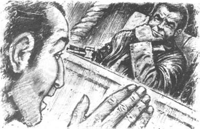
“那你有时吸食海洛因吗？”
“不，先生，从来没吸过。”
“谢谢你。请待在那儿。”
程先生坐下了，警方的律师站了起来。他冲哈桑笑了笑，但这笑却不和善。
“好，哈桑，你买了牙膏，它们却在哈兰小姐的包里。为什么？为什么要让她替你带着？或者你总是让女士替你拿东西吗？”他笑了。
哈桑哑口无言。律师又开始说了：“你说你有80英镑，但是我觉得拥有8万英镑会更好，你觉得呢？”
“当然好，但是我不贩卖海洛因，那是错误的。”
律师挪动了一下桌上的文件。他看着陪审团说：“这么说你是一个很不错的年轻人，有着漂亮的牙齿，口袋里却没有钱。你遇到了一个年轻的英国女孩。她与男朋友发生了不愉快，所以你就帮助她，而后把她带走了。是吗？噢，天哪！你知道，这个故事可不怎么样。年轻人，我不相信这个故事，我觉得陪审团也不会相信。”
他停顿了一会儿，然后看着哈桑，大声说：“你不爱萨拉·哈兰，她也不爱你。你和她在一块儿是因为她能帮助你；而她和你在一块儿是因为她想要钱。她为你携带你要贩卖的海洛因。是这样吧，对吗？你把海洛因装在牙膏管里，她是知道的。年轻人，这才是真实的故事吧？我觉得是这样的。”
“不！我……”哈桑很愤怒地说。但是律师不听他的，径直坐下了。
“我没有什么要问的了。”他对法官说。
chapter-a042_ 5
Chapter 5
The judge looked at his papers and then at the jury. 'It is now four o'clock in the afternoon,' he said. 'We can begin again in the morning. Please be here at ten o'clock.'
The judge stood up and left the courtroom. The jury left too, and the police took Sarah and Hassan back to the prison.
Anna looked at Stephen. 'Well, young man,' she said. 'What can we do now? We have sixteen hours before tomorrow morning.'
'I don't know,' Stephen said. He looked at her for a minute, then he looked away, over her head, at the front of the court. 'I'm sure Hassan knew about the heroin,' he said. 'He put it in her bag, I'm sure he did. Sarah is innocent. But he isn't.'
Mr Cheng came and stood with them.
'She's innocent,' Stephen said again. 'But Hassan's going to die.'
Mr Cheng looked at Stephen carefully. 'Perhaps,' he said slowly. 'But did you listen to Hassan in court? He said: "Sarah did not buy the toothpaste. It was my toothpaste." Now why did he say that? It was not an easy thing to say, you know. What is the jury going to think about it?'
'It doesn't matter,' Stephen said angrily. 'Because it wasn't toothpaste, and he didn't buy it in a shop! He made those tubes, because he wanted to sell the heroin. And he's going to die. That's the law in this country.'
Anna looked at Stephen and said nothing. 'He's very angry,' she thought. 'His face is red and he's talking very quickly. Does he want to kill Hassan? And what's the matter with his eyes?'
Mr Cheng watched Stephen too. 'But who made that telephone call? It's important and I want to know,' he said. 'I'm going to ask the police now. Would you like to come with me, Mrs Harland?'
'Yes, of course,' Anna said. 'Stephen, are you coming?'
'Yes ... er, no, no,' Stephen said. 'I'm going to meet a man. I think he can help us.'
'All right,' Anna said. 'But when can I meet you? I need to talk to you, about Hassan. Can I come to your hotel tonight?'
'Er, no, not tonight,' Stephen said quickly. His face was now white, and he looked tired and ill. His hands and body moved all the time. 'Come to my hotel tomorrow morning. Bye!' He walked quickly out of the courtroom.
Anna and Mr Cheng watched him. Inspector Aziz was near the door, and he watched Stephen, too.
take away remove sth. from. 带走。
what's the matter with ... ……怎么回事。
第五章
第五章
法官看看他的文件，又看看陪审团。“现在是下午四点，”他说，“我们可以在明天早上重新开庭，请于10点钟到场。”
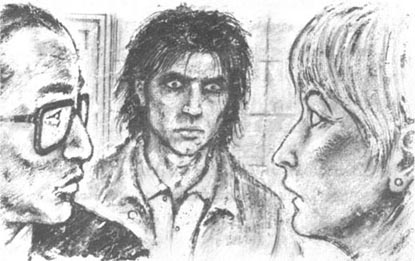
法官站起来，离开了法庭。陪审团也退庭了。警察把萨拉和哈桑带回监狱。
安娜看着斯蒂芬。“嗯，年轻人，”她说，“我们能做些什么呢？离明天早上重新开庭还有16个小时的时间。”
“我也不知道，”斯蒂芬说。他盯着她看了一会儿，而后把目光挪开，掠过她的头顶，看着法庭的前面。“我敢肯定哈桑知道海洛因的事，”他说，“是他把海洛因放到萨拉的包里的，我肯定是他干的。萨拉是无辜的，但他不是。”
程先生走了过来，和他们站在一起。
“她是无辜的，”斯蒂芬又说，“但是哈桑应该被处死。”
程先生认真地打量着斯蒂芬。“也许吧，”他慢条斯理地说，“但是你听到哈桑在法庭上说的话了吗？他说：‘萨拉没买牙膏，那是我的牙膏。’那他为什么要这样说呢？你知道，要那么说是很不容易的。陪审团会怎么想呢？”
“这无关紧要，”斯蒂芬愤怒地说，“因为那不是牙膏，他不是在商店买的！而是自己做的，因为他要贩卖海洛因。他要被处死了。这是这个国家的法律。”
安娜看着斯蒂芬，什么也没说。“他很愤怒，”她想，“他的脸涨红，而且讲话速度很快。他想要致哈桑于死地吗？他的眼神怎么了？”
程先生也在观察斯蒂芬。“但是谁打的电话呢？这很重要，我想知道。”他说，“我现在要去问问警察。您想一块儿去吗，哈兰太太？”
“是的，当然，”安娜说，“斯蒂芬，你也来吗？”
“好的……呃，不，不，”斯蒂芬说，“我要去见一个人，我想他能帮我们。”
“好吧，”安娜说，“那我什么时候能见你呢？我要和你谈谈哈桑的事。今天晚上，我去你住的旅馆，行吗？”
“呃，不，今晚不行，”斯蒂芬马上回答道。现在他脸色惨白，看起来疲惫不堪，像是病了。他的手和身体一直都在颤抖。“明天早上来吧！再见。”他飞快地走出了法庭。
安娜和程先生都望着他，阿齐兹探长站在门口，也在看着他。
chapter-a042_ 6
Chapter 6
Anna and Mr Cheng talked to the police, but the police could tell them nothing more about the telephone call to the airport. Inspector Aziz telephoned two or three people, and then he talked to Anna again. When Anna left Inspector Aziz, she was much happier.
Then she went to the prison to see Sarah. The man took her to Sarah's room. Anna and Sarah sat at the table, and the man stood and watched.
'It was a bad day, mother. I'm sorry,' Sarah said slowly. Her eyes were not red now, but she looked very tired. Her hands were near her mother's, on the table.
'It wasn't a very good day, that's true,' Anna said. 'But you have a very good lawyer, you know. The jury likes him.'
'But it doesn't help,' Sarah said. 'There was heroin in the toothpaste tubes, and the tubes were in my bag. What can Mr Cheng do? The heroin was in my bag, mother! The jury knows that!'
Anna looked at her daughter carefully. 'Perhaps Hassan put it there, Sarah,' she said. 'You like him, I know, and he looks nice, but ...'
'Mother, I love him! I said that in court. You heard me. And Hassan loves me, too! And he does not buy or sell heroin! I ...' Sarah stopped talking, and put her hands on her stomach.
'What's the matter?' Anna asked. She looked at the man. 'Quickly—she's ill. Get a doctor!' The man ran from the room, and Anna put her arms round her daughter. She waited, and then Sarah sat up.
'It's all right, mother,' she said. Her face was very white, but she looked a little better. 'It happens sometimes. I often feel ill, and I don't like to eat much. But it's not very bad. I think I'm going to stay alive because of it.' She gave her mother a smile.
'What? What are you saying? What are you talking about?' Anna cried.
'My baby.' Sarah's face looked different now—half smiling, half afraid. 'Mother, don't be angry, please. I'm going to have a baby. It's Hassan's baby. I ... we wanted to come to England, and tell you about it there, but now we can't. I love him, and he wants to be my husband, mother. Mother? Please don't be angry.'
Anna's face was white now. For nearly a minute she could say nothing. She wanted to cry, but she didn't. At last she said, 'Oh, Sarah! What's going to happen to this baby?'
Sarah looked at her hands. 'Nothing, mother. I asked Mr Cheng about that. They can't kill me, you see, because I'm going to have a baby. They can't kill a mother and her baby. That's the law. But ... that doesn't help Hassan.'
Anna heard a noise and looked at the door. 'Listen, Sarah,' she said quickly. 'Before the doctor comes .... I'm not angry, and I do love you, Sarah, of course. But listen. I talked to Inspector Aziz again today. I think he can help you—and Hassan too. So don't be afraid, please. And ...'
The door opened, and the man came in with a woman doctor. Anna stood up. She took Sarah's hand.
'I'm going now, Sarah. But don't be afraid. You're going to be all right—I'm sure of it!'
telephone v. speak to sb. by telephone. 给某人打电话。
happen v. occur, take place. 发生。
alive adj. living, not dead. 活着的。
because of by reason of. 因为，由于。
be sure of confident that one is right. 确信，有把握。
第六章
第六章
安娜和程先生去找警察了解情况，但是警方也不能给他们提供关于那个机场电话更多的信息。阿齐兹探长给两三个人打了电话后，又开始和安娜交谈。当安娜告别了阿齐兹探长时，她的心里亮堂了许多。
然后，她去监狱里看望萨拉。那个人把她带到萨拉的房间。安娜和萨拉坐在桌前。那人站着，看着她们。
“今天真糟糕，妈妈，对不起。”萨拉慢吞吞地说。她的眼睛现在已经不红了，但是她看起来很疲倦。她的手放在桌子上，离她妈妈的手很近。
“今天的情形不好，这是真的。”安娜说，“但你知道，你有一个很好的律师。陪审团很欣赏他。”
“但这无济于事，”萨拉说，“牙膏管里装有海洛因，而且牙膏又是在我的包里。程先生又能做什么呢？海洛因在我的包里，妈妈！陪审团知道这一点！”
安娜仔细地打量她的女儿。“也许是哈桑放在那儿的，萨拉。”她说，“你喜欢他，这我知道。他长得很帅，但是……”
“妈妈，我爱他！我在法庭上说了。你听到我说了，并且哈桑也爱我！哈桑没有买卖海洛因！我……”萨拉停了下来，用手捂着肚子。
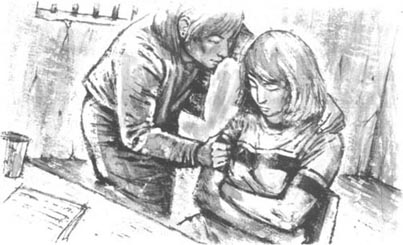
“怎么回事？”安娜问，她看着那个人，“快点——她病了，找个医生来！”
那人冲了出去，安娜搂着她的女儿。她等待着，然而萨拉坐了起来。
“没事的，妈妈。”她说。她的脸色苍白，但看起来好一些了。“时常会这样，我常常觉得不舒服，不怎么想吃东西。但这倒不算坏，我想，因为它，我还能免于一死呢！”她冲妈妈笑了一下。
“什么？你说什么？你到底在说什么呀？”安娜喊道。
“我的孩子，”现在萨拉的脸色和先前大不一样了——带有几分笑意，还有几分害怕。“妈妈，请别生气。我要有孩子了，是哈桑的孩子。我……我们想回英格兰，在那儿把这事儿告诉你，但现在我们去不成了。我爱他，他也想娶我，妈妈。妈妈？请千万别生气。”
现在安娜的脸白了。将近一分钟，她什么也没说。她想哭，但是没哭出来。最后她说：“噢，萨拉！这个孩子会怎样？”
萨拉看着自己的双手。“孩子没事的，妈妈。我问过程先生的。你知道，他们不能杀我，因为我要有孩子了。他们不能把母亲连同孩子一块儿杀死。法律是这么规定的。但……这帮不了哈桑。”
安娜听到一些声响，看了看门口。“听我说，萨拉，”她语速很快，“在医生来之前……我没有生气，我真的爱你，萨拉，这一点毫无疑问。但是听着，我今天又和阿齐兹探长谈了，我想他能帮助你——还有哈桑。所以一定别害怕。还有……”
门开了，那人和一个女医生进来了。安娜站了起来，她抓住萨拉的手。
“我要走了，萨拉，但是别害怕。你会没事的——我敢肯定这一点！”
chapter-a042_ 7
Chapter 7
Next morning, at half past four, Anna Harland stood in a quiet road in front of a hotel. She waited, and then she heard a car behind the hotel. The car doors opened and closed. She waited quietly, and then looked down the road. A man walked into the road and stood next to a shop. He did not look at Anna. But Anna looked at him, and smiled. Then she walked into the hotel.
She went upstairs and knocked on the door of a bedroom. A man answered.
'Who is it?'
'It's me, Stephen,' she said. 'Anna Harland. Open the door, please. I want to talk to you.'
The door opened, and Stephen looked out slowly. 'Anna? What are you doing here at this time? It's ...'
Anna walked quickly into the room. 'Yes. It's half past four. Sarah is in court again at ten o'clock. I need your help, young man. Please get up.'
'But ... what can I do?'
Anna looked at him. 'You went to see a man last night. What happened? Can he help Sarah?'
Stephen answered slowly. He did not look at Anna. 'No. I'm sorry. He can't.'
Anna was cold and angry. 'I see,' she said. 'Well, can you and I help her then? Tell me, Stephen, what do you know about Hassan?'
'Hassan?' Stephen said angrily. 'Well, we met him in Australia, and Sarah went away with him. She doesn't understand him, but I do—he's a rich young man with a beautiful body. He likes playing with girls, but he doesn't love her!'
'And do you love her, Stephen?'
Stephen did not answer at once. For two or three seconds Anna waited. 'He doesn't know,' she thought. 'He can't answer the question.'
'Yes, Mrs Harland. Of course I love her.'
'But he's not looking at me,' Anna thought. 'He's looking out of the window. He's not thinking about Sarah.'
'Stephen,' Anna asked quietly, 'did you go to see Sarah and Hassan in Australia, the night before they came to this country?'
Stephen looked up at her. 'Er ... yes, I went to their hotel,' he said. 'I asked Sarah to leave Hassan and come back to me. But how did you know that?'
'Sarah told me, of course. Was Hassan there?'
'No. He ...' Stephen stopped. Then he said, 'Why do you ask?'
Anna opened her handbag. 'Look at this,' she said. 'What is it? Do you know?'
He looked at it, and then at Anna. 'A tube of toothpaste. Why?'
'That's right. A policeman gave it to me. And he took it from a man. You met that man last night, Stephen. You gave him ten tubes of toothpaste. What was in those tubes of toothpaste, Stephen?'
Stephen said nothing. He looked at the toothpaste, and stood up. But Anna was between him and the door. She gave the toothpaste to him.
'Would you like to clean you teeth, Stephen?'
He began to move to the door, but Anna took his arm. 'You don't love Sarah, do you, Stephen? You hate her, because she left you! You put three of these tubes in Sarah's bag, and then you phoned the police. You told them about the tubes in my daughter's bag ... You want Sarah to die!'
'No!' Stephen said. 'No, no ... not Sarah ... Hassan! I put them in Hassan's bag, not Sarah's. I wanted Hassan to die!'
He opened the door quickly, and then stopped. A man stood there—Inspector Aziz. He put his hand on Stephen's arm.
'It's an old story, young man,' he said. 'It happens every day. My first girlfriend left me for a new man. I was very angry too. I hated him. But I didn't want to kill him. Come on. Let's go. You can tell your story to the judge.'
upstairs adv. up the stairs. 向楼上。
bedroom n. room for sleeping in. 卧室，起居室。
play with toy with. 玩弄。
between prep. in or into the space separating two people etc. 介于二者之间。
hate v. strongly dislike. 讨厌。
第七章
第七章
第二天早上，四点半，安娜·哈兰站在一家旅馆门前安静的街道上。她等待着，而后听到旅馆后面有汽车的声音。车门开了又关上了。安娜静静地等待着，沿路望着。一个男的走上了这条街道，在一个小店旁站住了。他没有看安娜。但是安娜看着他，笑了。接着，她走进了旅馆。
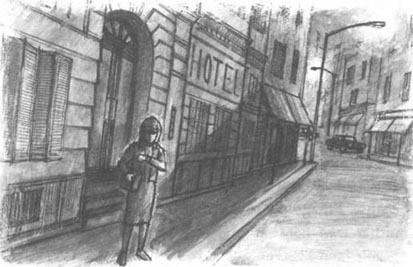
她上了楼，敲了敲一个房间的门。一个男人应声了。
“谁呀？”
“斯蒂芬，是我。”她说，“我是安娜·哈兰。开门吧，我要和你谈谈。”
门开了，斯蒂芬慢慢地向外张望。“安娜？这个时候，你在这儿干什么？现在是……”
安娜快步走进了房间。“是的，才四点半。萨拉10点钟就又要上法庭了。年轻人，我需要你的帮助，起床吧。”
“但是……我能做什么呢？”
安娜看着他。“你昨天晚上去见了一个人。怎么样？他能帮助萨拉吗？”
斯蒂芬慢条斯理地说：“不能，对不起，他帮不了萨拉。”但他没有看着安娜。
安娜觉得浑身发冷，很生气。“我明白了。”她说，“好吧，那我和你能帮助她吗？告诉我，斯蒂芬，关于哈桑，你知道些什么？”
“哈桑？”斯蒂芬愤怒地说，“是这样的。我们在澳大利亚遇到他，然后萨拉就跟他走了。她不了解他，但我知道——他只是个仪表堂堂的富家子弟。他喜欢玩弄女孩子，但他不爱她！”
“那你爱她吗，斯蒂芬？”
斯蒂芬没有立刻回答。安娜等了两三秒钟。“他不知道，”她想，“他不能回答这个问题。”
“是的，哈兰太太，我当然爱她。”
“但是他没有看着我，”安娜想，“他看着窗外，他不是在想萨拉。”
“斯蒂芬，”安娜平静地问，“萨拉和哈桑来这个国家的前一天晚上还在澳大利亚，你去看他们了吗？”
斯蒂芬抬起头，看着她，“呃……是的，我去了他们住的旅馆。”他说，“我让萨拉离开哈桑，回到我身边。不过，你是怎么知道这件事的？”
“当然是萨拉告诉我的。哈桑在场吗？”
“不，他……”斯蒂芬停住了。接着他说：“你为什么要问这些？”
安娜打开她的手提袋。“看看这个，”她说，“这是什么？你知道吗？”
他看着它，又看看安娜。“一管牙膏，怎么了？”
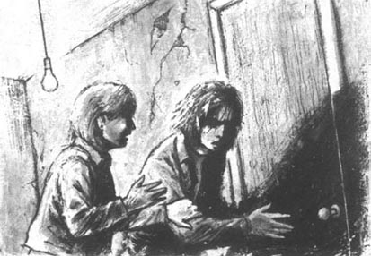
“没错。这是一个警察给我的，他从一个男的那儿得到的。斯蒂芬，你昨天晚上去见了那个人，你给了他10管牙膏。这些牙膏管里装的是什么，斯蒂芬？”
斯蒂芬哑口无言。他看着牙膏，站了起来。但是安娜挡在了他和门之间。她把牙膏递给他。
“你可以用它刷刷牙吗？斯蒂芬，可以吗？”
他开始向门口走去，但安娜抓住了他的胳膊。“你不爱萨拉，对不对，斯蒂芬？你恨她，因为她离开了你！你把三管这样的牙膏放在她的包里，而后你又给警察打电话，告诉他们我女儿包里的牙膏管……你想要萨拉死！”
“不！”斯蒂芬说，“不，不……不是萨拉……是哈桑！我把牙膏放在了哈桑的包里，而不是萨拉的。我想要哈桑去死！”
他迅速地打开门，却站住了。一个男人站在那儿——阿齐兹探长。他抓住了斯蒂芬的胳膊。
“这是一个老套的故事，年轻人。”他说，“它天天都在上演。我的第一个女朋友为了另一个人离开了我。我也很愤怒。我恨他。但是我并不想杀他。来吧，我们走。你可以把你的故事讲给法官听。”
chapter-a042_ 8
Chapter 8
At eleven o'clock that morning, Sarah and Hassan were free. Sarah stood with her mother, Inspector Aziz, and Mr Cheng. She smiled happily.
'Mother, you're wonderful! Now I can be happy! But ... how did you know about Stephen?'
Inspector Aziz answered. 'Young woman,' he said. 'Remember, your mother is a doctor. She knew Stephen was ill because of his eyes, and his body. His eyes are very big and dark, and his body is always moving ...'
'Well, yes,' Anna said. 'But you helped me, Sarah. You said he was different—remember? And I looked at him carefully, and began to think. Heroin does that to people.'
'He did a very bad thing,' Sarah said slowly, 'but I feel sorry for him now. When is he going to court, Inspector?'
'I don't know,' the Inspector said. 'In two weeks, perhaps. But don't think about him. Would you like to see our beautiful country, Mrs Harland? Where would you like to go?'
Anna smiled at him. 'Thank you. But I can't stay. Tomorrow, I'm going back to England, to talk to Stephen's mother and father.'
Inspector Aziz looked at her, and said nothing for a minute. Then he said quietly: 'Yes. I feel very sorry for them. It kills a lot of young people, this heroin.'
'Yes. But it isn't going to kill my daughter. She isn't going to die now.' Anna took Sarah's hand. 'So thank you again, Inspector Aziz and Mr Cheng. And goodbye. Now I'm going to have a long cold drink in a quiet garden with my daughter and her new young man. I want to know a lot more about him.'
Hassan stood with his mother and father near the door of the court. Anna Harland put her hand on her daughter's arm, and smiled at them.
remember v. keep or have in the memory. 记住，记着。
feel sorry for feel sympathy for. 同情。
drink n. liquid for drinking. 饮料。
garden n. private ground used for growing flowers etc. 花园。
第八章
第八章
那天上午11点，萨拉和哈桑获释了。萨拉和她的妈妈、阿齐兹探长以及程先生站在一起。她开心地笑了。
“妈妈，你真了不起！我现在可以高高兴兴的啦！但是……你是怎么知道是斯蒂芬的呢？”
阿齐兹探长回答说：“姑娘，”他说，“记住，你妈妈是医生。看到斯蒂芬的眼睛和身体状况，她就知道他有病。他的眼睛很大，但黯淡无光，他的身子还总是在颤抖……”
“哦，是的，”安娜说，“不过，你帮了我，萨拉。你说过，他和以前不一样了——还记得吗？然后我很认真地观察他，开始思考。海洛因会使人变成那样的。”
“他确实干了一件坏事，”萨拉慢慢地说，“但是我现在很同情他。他什么时候上法庭，探长？”
“我不知道，”探长说，“也许两个星期后。不过不要想他了。您愿意看看我们美丽的国家吗，哈兰太太？您想去哪儿？”
安娜冲他笑了笑。“谢谢你。可我不能待在这儿。我明天就回英格兰，把这事跟斯蒂芬的父母谈谈。”
阿齐兹探长看着她，沉默了一会儿。然后他平静地说：“是呀，我为他们感到难过。海洛因毁了很多年轻人。”
“是啊，但是它不会伤害我女儿。现在她不会死了。”安娜拉住萨拉的手，“所以再次谢谢你们，阿齐兹探长，程先生，再见。现在，我要去找一个安静的花园，和我的女儿，还有她的新任男朋友，慢慢地喝冷饮。我要多了解一些他的情况。”
哈桑和他的父母站在法庭门口不远的地方。安娜·哈兰手挽着她的女儿，冲着他们微笑。
ACTIVITIES: Before Reading
ACTIVITIES
Before Reading
1．Read the story introduction of the book. How much do you know now about the story?
Tick one box for each sentence.
1) Anna Harland is Sarah's daughter.
YES □／NO □
2) Sarah had heroin in her bag.
YES □／NO □
3) Sarah said that it was her heroin.
YES □／NO □
4) Anna thinks that it was Sarah's heroin.
YES □／NO □
5) People who take heroin die.
YES □／NO □
2．What is going to happen in the story? Can you guess?
Tick one box for each sentence.
1) Sarah Harland dies.
YES □／NO □
2) Sarah's new boyfriend dies.
YES □／NO □
3) Sarah and her new boyfriend get married.
YES □／NO □
4) Sarah's old boyfriend helps her.
YES □／NO □
5) Sarah goes back to England with her mother.
YES □／NO □
ACTIVITIES: While Reading
ACTIVITIES
While Reading
1．Read Chapters 1 and 2. Are these sentences true (T) or false (F)?
1) The prison is in England.
2) Sarah came to this country with Stephen.
3) Hassan is in prison too.
4) The heroin was in a box of chocolates.
5) Sarah worked in a hospital so she knew about heroin.
2．Read Chapter 3. Use these words from the story to complete this paragraph. (Use each word once.)
die, kills, happy, airport, tubes, money, Death, toothpaste, bags, telephoned
People take heroin because at first it makes them________. But in the end it________them. This is why it is called the White________. People sell heroin for lots of________. The law says that people who bring heroin into the country must________. Someone________the police and said that a young man and a young woman had heroin in their________. When Sarah and Hassan arrived at the________, the police looked in their bags. They found three________of toothpaste. But there was heroin in the tubes, not________.
3．Read Chapter 4. Who said this? Who were they talking to? Who or what were they talking about?
1) 'But Sarah—he was your boyfriend for two years!'
2) 'He doesn't love me now, and I don't love him.'
3) 'That's very important.'
4) 'I bought it.'
5) 'Why did she carry it for you?'
4．Read Chapters 5 and 6. Choose the correct ending for each sentence.
1) Stephen said that ...
(a) Sarah knew about the heroin but Hassan didn't.
(b) Hassan knew about the heroin but Sarah didn't.
(c) Hassan and Sarah both knew about the heroin.
2) Stephen told Anna to come to his hotel ...
(a) tomorrow morning.
(b) toninght.
(c) tomorrow night.
3) Sarah is sometimes ill because ...
(a) she takes heroin.
(b) she is going to have a baby.
(c) she is frightened.
4) The father of the baby is ...
(a) Stephen.
(b) Mr Cheng.
(c) Hassan.
5) The law says that they can't kill ...
(a) a woman.
(b) a woman who is going to have a baby.
(c) a man and a woman who are going to have a baby.
5．Read Chapters 7 and 8. Here are some untrue sentences. Change them into true sentences.
1) Sarah put the heroin in the toothpaste tubes.
2) Hassan put the heroin in Sarah's bag.
3) Stephen didn't want Hassan to die.
4) Inspector Aziz married his first girlfriend.
5) Anna knew about Stephen because she takes heroin.
6) Anna was angry about Sarah and Hassan.
7) Stephen is going to go back to England.
6．What is going to happen after the end of the story? What do you think?
1) Sarah and Hassan get married.
2) Stephen dies.
3) Sarah becomes a doctor.
4) Stephen's mother and father are angry with Anna.
5) Sarah and Hassan go to live in England.
ACTIVITIES: After Reading
ACTIVITIES
After Reading
1．Choose the odd one out in these groups of words.
1) police, prison, baby, arrest, inspector
2) daughter, judge, court, jury, lawyer
3) hospital, doctor, drug, ill, toothpaste
4) airport, plane, heroin, bag, hotel.
2．Fill in the chart with information about the people. Then use the information to write a short description of each person. Use pronouns (he, she, etc.) and join your sentences with and where possible.
Example: Sarah is 19. She is tall and she ...
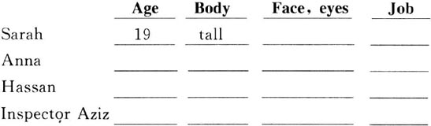
3．The chapters in this book do not have titles. Here is a list of titles. Choose one for each chapter.
| Sarah's story | Hassan's story |
| In prison | Inspector Aziz |
| Heroin kills | Stephen is angry |
| Stephen's story | Sarah is ill |
4．Here is a conversation between Anna and Inspector Aziz. It is in the wrong order. Write it out in the correct order and put in the speakers' names. Aziz speaks first (number 8).
1) ________ 'Because his eyes are very big and dark, and his body is always moving.'
2) ________ 'Go to Stephen's hotel early tomorrow morning. Show this tube of toothpaste to him. It has heroin in it.'
3) ________ 'I think that he takes heroin.'
4) ________ 'I think that you are right. So I want you to help me.'
5) ________ 'I'm going to be outside the door. I'm going to listen to what he says.'
6) ________ 'Of course, Inspector. What can I do?'
7) ________ 'Why do you think that?'
8) Aziz 'You're a doctor. What do you think about Stephen, Mrs Harland?'
9) ________ 'But how can that help?'
5．Here is a new illustration for the story. Find the best place in the story to put the picture, and answer these questions.
The picture goes in Chapter________.
1) Who are the people in this picture?
2) Where are they now, and where are they going to go?
3) What is the young man going to say? Can you imagine?
Now write a caption for the picture.
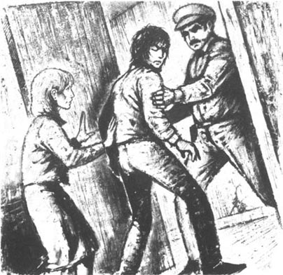
Caption:_________________________________
6．Choose answers to these questions.
1) The law in this story says that people who bring heroin into the country must die. Is this right?
(a) Yes. The law must punish people who do bad things.
(b) No. It is always wrong to kill people, and sometimes the wrong person dies.
(c) Perhaps. It is better for the judge to decide each time.
2) When Hassan hit the police car, his father bought a new car for the police and Hassan didn't go to prison. Was this right?
(a) Yes. It was just an accident. Hassan didn't kill anyone.
(b) No. People who do something bad must go to prison.
(c) Perhaps. Rich people can pay, so they don't go to prison. But what about poor people?
7．What do you think about Sarah's two boyfriends?
1) 'It was my toothpaste,' Hassan said to the court. Why did he say that? Was he right to say it?
2) 'Of course I love Sarah,' Stephen said to Anna. Do you think that was true? Why, or why not?
封底
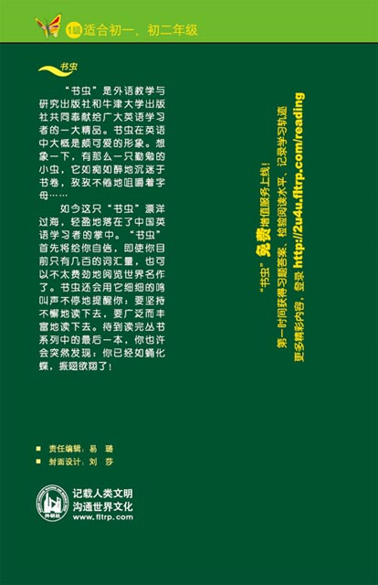